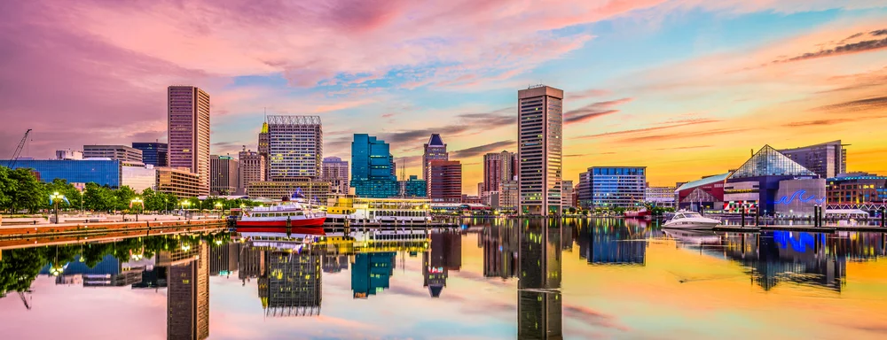

Cannabis Industry Opportunities
Maryland
In November 2022, Maryland voters approved a referendum to legalize marijuana for adult use, leading to the subsequent passage of the Cannabis Reform Act (H.B. 556/S.B. 516) by the Maryland Legislature in spring 2023. This legislation officially came into effect upon Governor Wes Moore's signing on May 3, 2023, with sales of adult-use cannabis permitted starting from July 1, 2023. Notably, Maryland enforces a 9% sales and use tax on retail sales of adult-use cannabis and cannabis products, aligning with the tax rate applied to alcoholic beverages.
The Office of the Comptroller is dedicated to supporting Maryland's business community, including the newly legalized adult-use cannabis industry. The agency oversees the administration of the state's sales and use tax, encompassing the collection of taxes and the distribution of revenue derived from retail sales of adult-use cannabis.
Despite statewide legalization, municipalities within Maryland retain the authority to establish their own regulations governing the use and consumption of cannabis. Notable examples include Ocean City's crackdown on on-site cannabis consumption and Baltimore County's alignment of local regulations with state law regarding dispensary distance requirements.
Maryland's current medical marijuana law recognizes a range of qualifying conditions for patients, including cachexia, anorexia, severe pain, seizures, and post-traumatic stress disorder, among others. Senate Bill 923, enacted in April 2014, authorized access to medical cannabis for patients with serious illnesses, with the Natalie M. LaPrade Medical Cannabis Commission (MMCC) overseeing the industry.
The MMCC formulated regulations for the medical cannabis industry, which became official in September 2015. During the initial phase of medical cannabis license applications, the MMCC received 1081 applications in November 2015, leading to the approval of dispensary, cultivating, and processing licenses.
Governor Larry Hogan signed House Bill 2 (HB2) in May 2018, introducing significant updates to Maryland's medical marijuana program. This legislation aimed to enhance the participation of small, minority, and women-owned businesses. Subsequently, discussions regarding full recreational marijuana legalization in Maryland have also emerged.
HB2 authorized the MMCC to issue additional permits, although concerns about the process led to a restraining order in September 2019, blocking the issuance of 14 licenses. The MMCC is set to initiate an independent investigation into these licenses and the associated awarding process.
Maryland will offer adult-use cannabis licenses during the application window between November 13th and December 12th. This will be the first round of licenses offered by Maryland and there will be subsequent rounds. This current round will be catered towards social equity applicants that will take up the majority of the licensure. These licenses are categorized as follows:
Both standard and micro licenses grant businesses the opportunity to engage in the cultivation, processing, or dispensing of cannabis and cannabis products in Maryland. Micro licenses cater to smaller enterprises, with limitations on the quantity of cannabis that can be cultivated or processed as stipulated by law. Additionally, micro dispensaries may establish delivery services for cannabis and cannabis products, serving patients and consumers.
Call us at (702) 533-4899 or please fill out our contact form!
Book a consultation with one of our experts and let us guide you.
Maryland is projected to retail around $48 million in its first full year of medical sales, about $163 million in the second year, and approximately $387 million in the third year of legal medical cannabis sales. - Akerna
If you are just starting your marijuana business, the best next step is to create a Business Plan to educate your team and prepare for the marijuana business license application process.
If you are ready to apply for a Marijuana Business License in Maryland, please contact us or call our offices to set up an appointment. You can also explore other state opportunities or fill out our Contact Form to discuss strategies such as investment or partnership opportunities.
Our headquarters are located in the San Francisco Bay Area and Las Vegas Nevada. We offer a full suite of custom solutions for your cannabis business including business planning, license application development, and investment opportunities. If you are in need of assistance, please call us during business hours listed below. Thank you.
Operating Hours
Mon - Fri: 8am - 5pm PST
Head Office
2300 West Sahara Avenue Suite 800 Las Vegas, NV 89102

services@greenrushconsulting.com
© 2025 Green Rush Consulting LLC. All Rights Reserved.